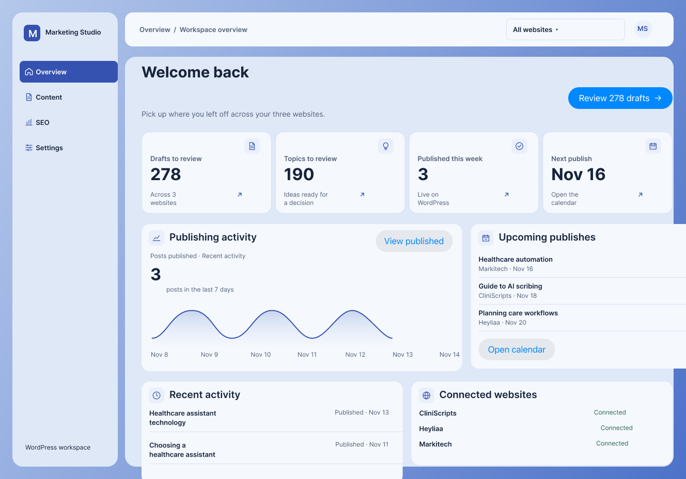
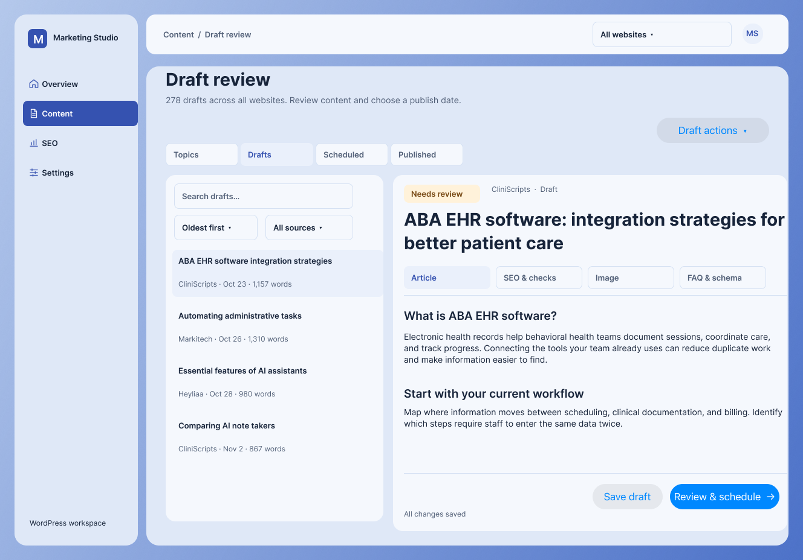
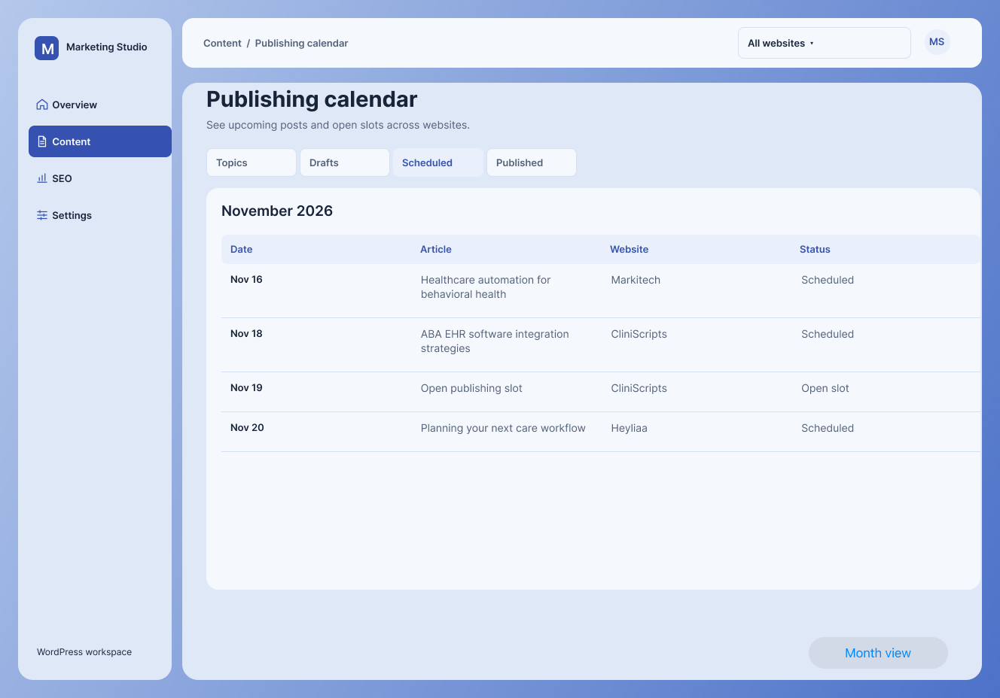
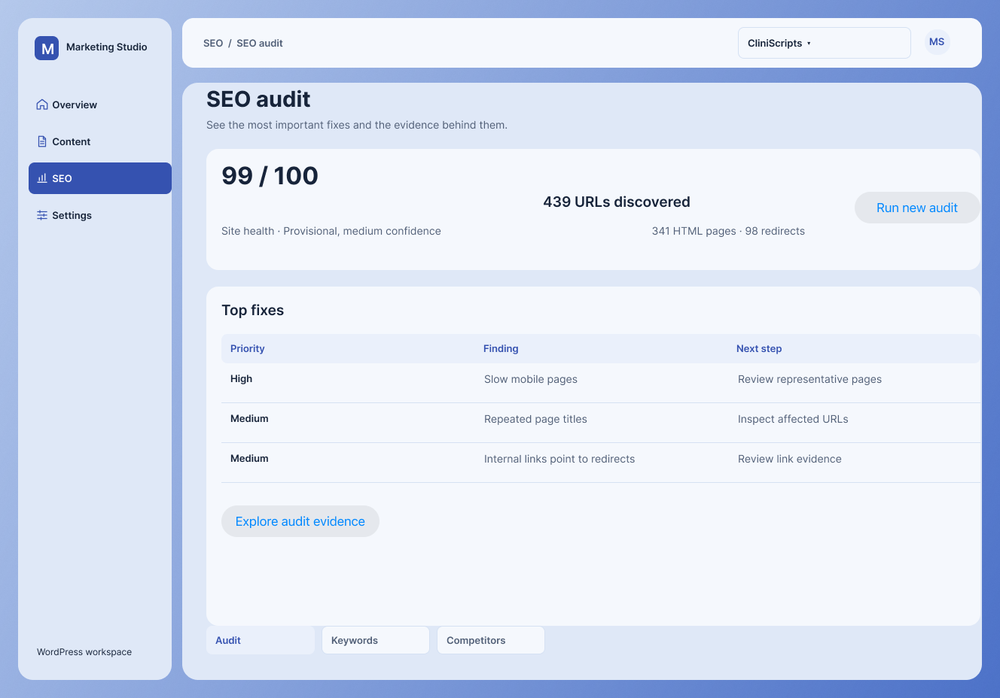

Bring drafts, topics, schedules and performance signals into one workspace.
MARKETING STUDIO · PRODUCT DESIGN
Multi-site content · Publishing · SEO
Turning scattered marketing work into one clear operating system.
I designed a unified workspace where teams can review AI-assisted drafts, plan publishing across websites and move from SEO evidence to a focused next action.




Selected product states from the Marketing Studio clickable prototype.
Role
Product Designer
Product
Multi-site marketing operations
Scope
UX/UI, design system and prototype
Core workflows
Content review, publishing and SEO
01 · Problem
Marketing decisions were spread across tools, websites and review states.
Teams needed to understand what required attention without piecing together separate content, publishing and SEO views. The product had to organize high-volume work across multiple websites while keeping review status, evidence and next actions easy to scan.
Give people enough context to approve, revise, reject or schedule generated content.
Make source, website, status and timing visible throughout the workflow.
02 · Solution
I designed the information architecture around the decisions people make.
Structure
Organize the product into overview, content, SEO and settings with a consistent global website selector.
Prioritize
Surface drafts to review, topics awaiting decisions, upcoming publishes and site health before secondary detail.
Connect
Carry website, status and publishing context from list views into detailed review actions.
Prototype
Build realistic linked states to test navigation, density, hierarchy and the end-to-end review flow.
Flow 01 · Review and publish
Move from a queue to a confident publishing decision.
The draft workspace keeps search, sorting and status visible beside the article. Review actions remain anchored to the content so a user can save, inspect supporting checks and choose a publishing date without losing context.
Flow 02 · Plan across websites
One calendar for content that belongs to different brands.
A shared schedule makes upcoming posts and open publishing slots visible across connected websites. Tabs preserve the relationship between topics, drafts, scheduled work and published content.
Flow 03 · Evidence to action
SEO findings are framed as decisions, not a wall of metrics.
The audit starts with site health, the size of the evidence set and the most important fixes. Clear next steps let users move from a finding into the supporting pages and decide what to address first.
03 · Implementation
A reusable UI system keeps dense workflows calm and consistent.
- Product information architecture
- Multi-site navigation model
- Dashboard hierarchy and prioritization
- Content review and approval states
- Publishing calendar workflow
- SEO audit and evidence patterns
- Reusable navigation, field, tab and status components
- High-fidelity clickable prototype
Outcome
A connected product concept that makes complex marketing operations feel manageable.
The final prototype demonstrates a coherent system across overview, content operations, publishing, SEO and setup. Each screen uses the same hierarchy, components and interaction language, allowing teams to move between workflows without relearning the product.
Back to selected work
View all projects ↗